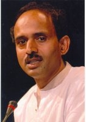
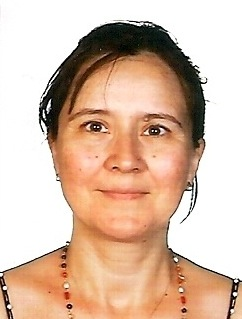
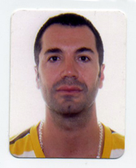
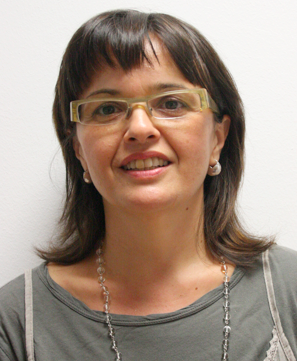
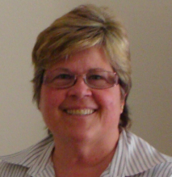

Misión
La Asociación de Filosofía de Vida es una asociación sin ánimo de lucro cuya misión es la de promover el conocimiento, la formación y la investigación en todas las áreas relacionadas con el ayurveda.

Nace desde la inquietud de un grupo de estudiantes y profesionales formados en la enseñanza tradicional en Ayurveda, que sintieron la necesidad de disponer de un foro o plataforma, en el que se realizara un intercambio significativo sobre conocimientos, prácticas clínicas y sobre la filosofía ayurvédica. Esta asociación, surgió además con la voluntad de transformarla en un cuerpo profesional que represente el Ayurveda y a sus profesionales, con capacidad extender y propagar el conocimiento a profesionales y para el público general.
Ayurveda tiene una gran importancia para el mantenimiento, promoción, prevención de la salud y tratamiento de la enfermedad, por lo que la transmisión de este conocimiento debe hacerse de una forma fiel a sus orígenes, reglada y velando por el manteniendo su pureza.
Objetivos
Nuestros objetivos van encaminados a dar respuesta a la misión de nuestra Asociación, dando soporte a los profesionales que están ejerciendo el ayurveda y fomentando la difusión del conocimiento a profesionales y a público en general.
» A nivel de formación:
Divulgar el conocimiento de la filosofía ayurvédica entre los profesionales del ámbito de la salud.
Favorecer la Formación Continuada para profesionales.
» Por la profesionalización
Difundir las normas éticas y morales que el ayurveda establece para el ejercicio profesional.
Velar por su correcta práctica.
Promocionar a los profesionales que trabajan en el campo de ayurveda.
Conseguir el reconocimiento de Ayurveda como sistema de salud con un marco legal claro.
» Para la investigación
Desarrollar la investigación en todas las áreas relacionadas con ayurveda.
» Divulgación
Promocionar y divulgar la filosofía de vida ayurvédica en la población en general.
Promocionar un estilo de vida saludables.
Promocionar la práctica del yoga y la meditación.
Colaborar en la difusión de la Cultura y Filosofía ayurvédica con asociaciones y organizaciones tanto públicas como privadas de ámbito nacional e internacional.
Quienes somos

Presidente de Honor: Vaidya Sudhakar R. Powar
Ha cursado estudios en la Universidad de Bombay BAMS para el grado de Ayurvedacharya, Diploma de Yoga; y en la Universidad Hindú de Benares de M.D. (Especialidad de Balaroga). El conocimiento en la materia del Dr. Powar es el producto de los conocimientos universitarios y de la tradición familiar de Vaidyas de diversas generaciones.
Tiene una amplia experiencia en investigación académica, tanto en aspectos clínicos como docentes. Actualmente, desarrolla su práctica clínica en New Bombay y la docente en la Shree Dharmasthala Manjunatheshwara Ayurvedic Medical College, Hassan. Desde hace 15 años viene regularmente a Europa a impartir cursos de Ayurveda. Ha impartido los cursos de Terapia y masaje Ayurvédico (Abhyangam) desde el año 2004 hasta el año 2009 en la EUI Santa Madrona de la Fundación “la Caixa” (UB) Barcelona.
El año 2008 fue galardonado por la Rosa de Jericó de oro en reconocimiento por su contribución a la humanización de los cuidados y al desarrollo de la formación en Terapias Naturales.

Presidenta: Elena Saura Portillo
Diplomada en Enfermería por la EUI San Juan de Dios en el año 1987. Diploma en Masaje Ayurvédico por la Universidad de Pune en el año 2003; Curso de Panchakarma and Ayurvedic Cosmetics en Tilak Ayurveda College. Pune. India en el año 2003; curso de 2ª Nivel de Masaje Ayurvédico impartido por el Dr. Powar en el año 2004 en Barcelona; Advance Program in Abhyanga & Introductory Panchakarma en SDM College of Ayurveda, Hassan en el año 2010.
Tiene una amplia experiencia en el ámbito docente. Ha coordinado y participado como docente en todos los cursos de Ayurveda realizados desde el año 2004 hasta el 2009 en la EUI Santa Madrona de la Fundación “la Caixa” (UB).

Vicepresidente: Vincent Martínez Gijón
En 2003 realizó un curso de Panchakarma and Ayurvedic Cosmetics en Tilak Ayurveda College, Pune, India. Desde entonces ha seguido su formación en ayurveda con la asistencia a seminarios. El año 2010, realizó el Advance Program in Abhyanga & Introductory Panchakarma en SDM College of Ayurveda en Hassan, India.
Actualmente cursa estudios de Nutrición Humana y Dietética en la Universidad Complutense de Madrid.

Secretaria: Laura Catalan
Ha estado en búsqueda del aprendizaje de terapias complementarias para aplicarlas en el mantenimiento de su propia salud, lo que le llevó a cursar estudios de Estudios de Quiromasaje Terapéutico en la Escuela de Masaje Terapéutico AMACVI de Barcelona y de Reflexología en el Centro de Estudios Terapéuticos de Sabadell.
En el año 2007, realizó un Curso de Terapia y masaje Ayurvédico (Abhyanga) en la EUE Santa Madrona de la Fundación “la Caixa” (UB). Desde entonces ha seguido profundizando el estudio de la filosofía ayurvédica a través de la asistencia a seminarios, en la práctica y en el estudio del ayurveda.

Tesorera: Mercè Valls
Cursó estudios de Reflexología Podal el año 2000.
Desde el año 2003, cuando obtuvo el Diploma en Masaje Ayurvédico por la Universidad de Pune – India, ha seguido formándose y profundizando en el conocimiento del ayurveda a través de diversas formaciones como: Curso de 2º Nivel en Masaje Ayurvédico impartido por el Dr. Powar en el año 2004 en Barcelona, cursos sobre Dinacharya (rutina diaria), Nutrición, Filosofía, Dravyaguna Vignyana (fitoterapia) y Ritucharya (rutina estacional).
Tiene una amplia experiencia como terapeuta ayurvédica.


{kind=link}
{kind=link}
{kind=link}
{kind=link}
{kind=link}
{kind=link}
{kind=link}
{kind=link}
{kind=link}
{kind=link}
{kind=link}